T267 · Antes y después de los niveles 1, 14 y 15
Qué es. Capturas reales del juego a 1280×720, hechas con el mismo script en dos versiones del proyecto. Antes = commit 377fd65, el último anterior a la integración del arte renderizado (T277, c30c91c), con las rocas, adornos y flora viejos. Después = origin/main actual (con T277, T508 rocas, T524 adornos M79, T542 flora y T544).
Cómo mirar. Arrastrá el control de cada nivel: lo que queda a la izquierda es el antes y lo de la derecha el después. Debajo hay ampliaciones de cada pieza que cambió. Abajo de cada nivel está la casilla para tu decisión.
Son pantallas preparadas con el estado real del campo (mina y bosque habilitados, escombro en trabajo, reservas agotadas), no partidas jugadas. Solo se muestran estados que cambian algo: el nivel 1 no tiene mina, bosque ni escombro, por eso tiene una sola captura.
Nivel 1 · Pradera
Cambió (3 piezas):
- Estatua de leyenda (casilla bloqueada junto al árbol): el muñeco gris pasó a un cañón de piedra con musgo (T267b/T277).
- Dos matas de flores (arriba a la izquierda y abajo al centro): ahora son flora alienígena de Cántaro (capullos violáceos, T542).
Sigue igual: terreno de pasto, camino, árbol, agua de la entrada, barra superior e inferior. Si esperabas ver más arte nuevo en el 1, esto es todo lo que hay: el resto del mapa no cambió.
Estatua de leyenda
El cañón reemplaza al muñeco gris. Misma casilla, no construible, no abre panel.
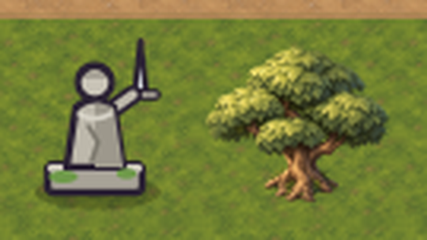
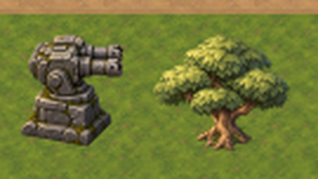
Flora (arriba)
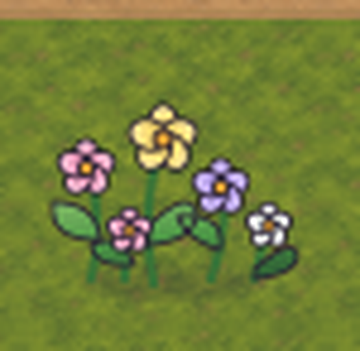
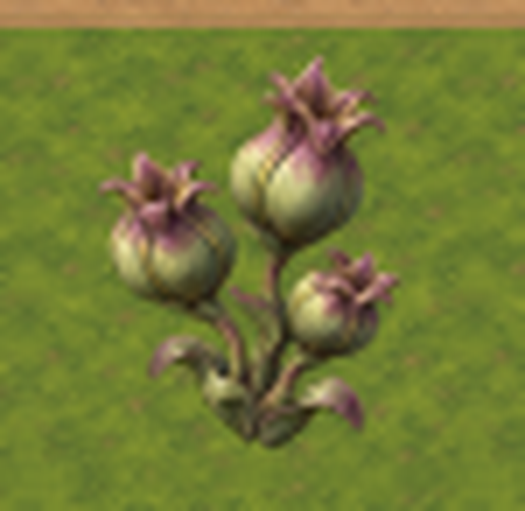
Flora (abajo)
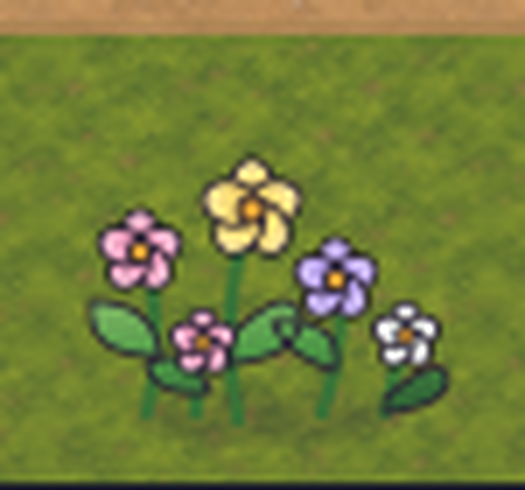
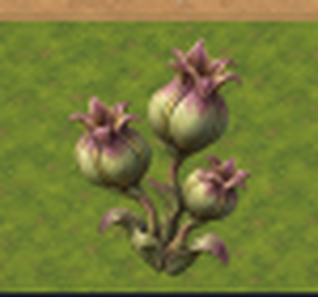
Nivel 14 · Ruinas
Cambió:
- Estatuas de leyenda (las figuras sobre los bloques): pasan de muñecos grises a cañones y ametralladoras de piedra con musgo (T277).
- Bloques, columnas y lápidas decorativas: ahora son rocas y bloques genéricos más chicos y de piedra lisa (T508); las marcas «A» pasaron a rocas oscuras (T508/M80).
- Ruinas / campamento: las carpas rojas se cambiaron por carpas y fogatas de campamento abandonado (T524, M79).
- Mina (3 estados), bosque explotable (3 estados) y escombro en trabajo: ahora usan los dibujos renderizados aprobados en T267b (antes eran formas hechas por código) (T277).
- Borde del mapa: aparece una franja de terreno pintado a izquierda y derecha.
Sigue viejo / sin arte aprobado: el escombro intacto (el montón con rombo) y el escombro despejado (suelo liso) se ven igual; el indicador de reserva (segmentos verdes) y la barra de progreso siguen dibujados por código (T543). Los caminos, el HUD y los botones no cambiaron.
Zona de estatuas, bloques y rocas
Misma franja del mapa. Las columnas altas del antes pasan a ser bloques bajos; los muñecos, cañones; la «A», una roca oscura.
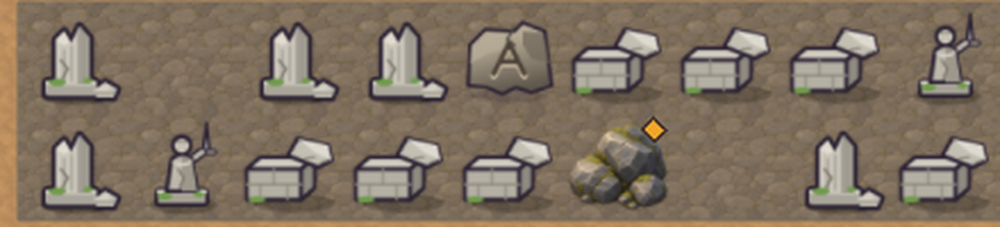
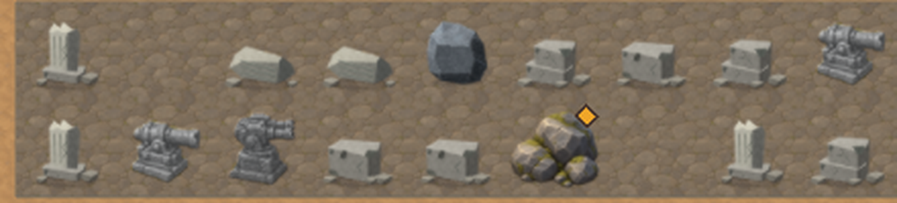
Ruinas con campamento
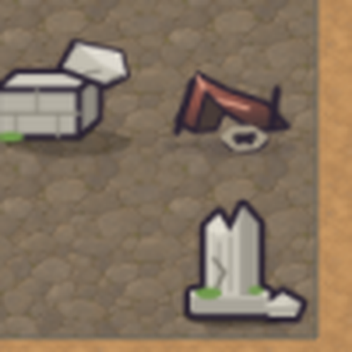
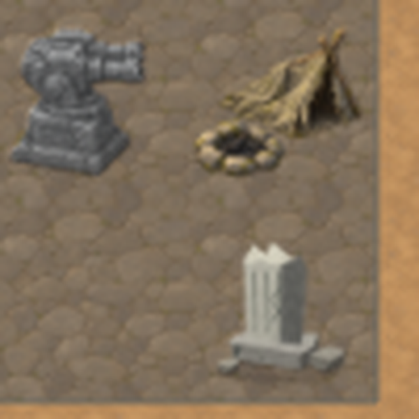
Mina habilitada
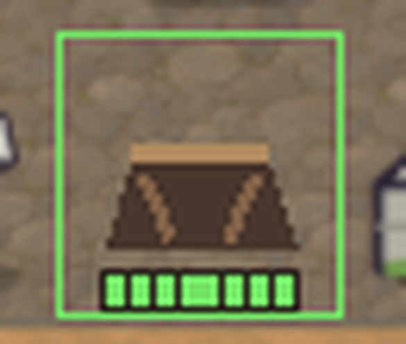
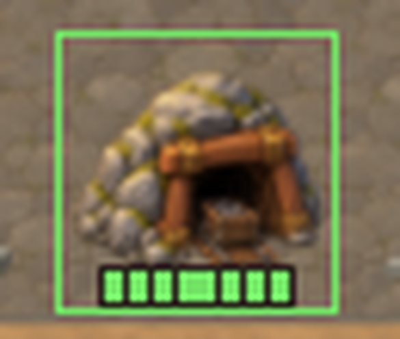
Mina agotada
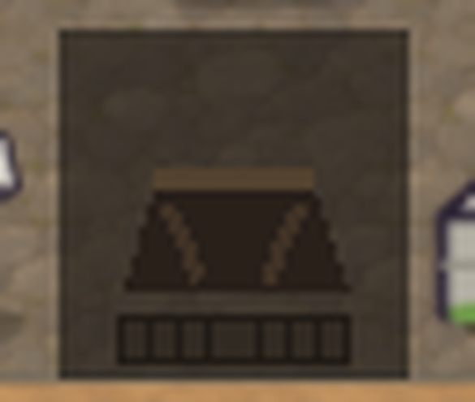
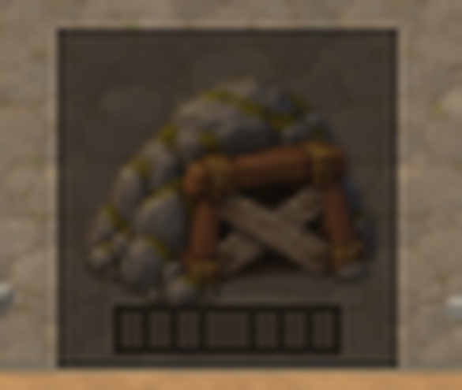
Bosque habilitado
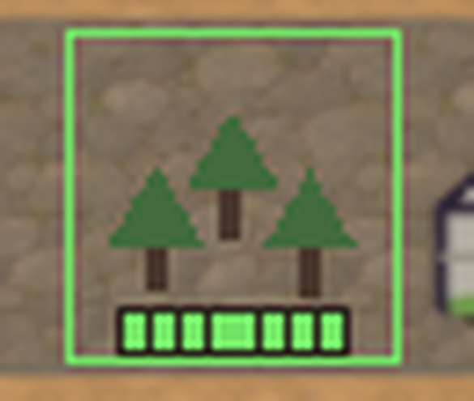
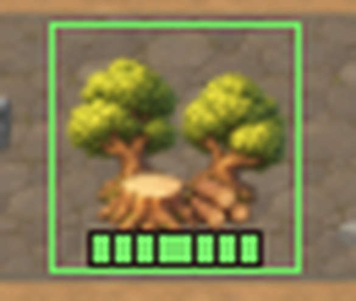
Bosque agotado
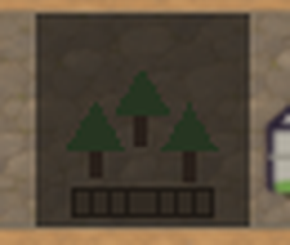
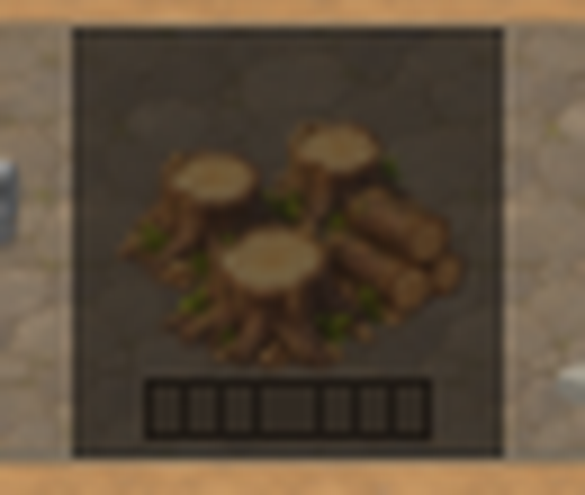
Escombro en trabajo
La barra de progreso y el rombo siguen siendo por código; cambia el montón.
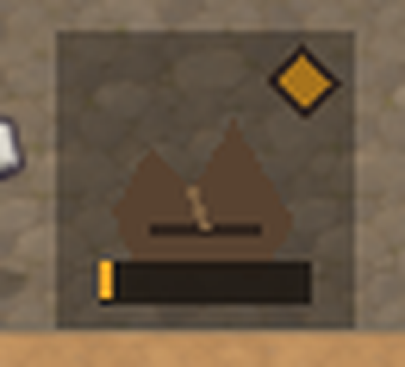
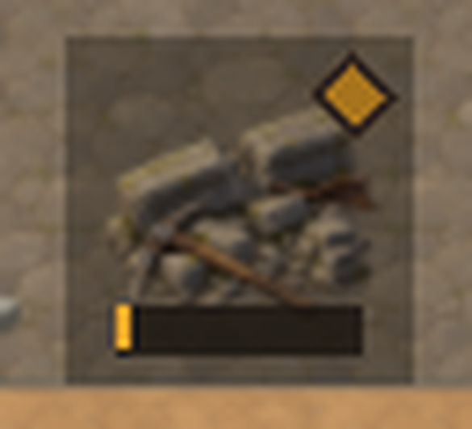
Nivel 15 · Central
Cambió:
- Central (abajo a la derecha, 2×2 casillas): del edificio celeste de dibujo plano a una pieza continua renderizada de ladrillo y cobre (T277).
- Mina y bosque explotable (todos los estados) y escombro en trabajo: renderizados (T277).
- Marcas «A»: pasaron a rocas (T508); carpas rojas pasaron a campamento abandonado (T524).
- Borde del mapa: franja de terreno pintado a izquierda y derecha.
Sigue viejo, sin arte aprobado: el abastecimiento (la casa con techo marrón, el carro minero y el poste) es todavía el de T233, idéntico al de antes; lo reemplazará T549. También siguen iguales el árbol y la roca decorativos de relleno, el indicador de reserva por código, hito.svg y la imagen del epílogo.
Central
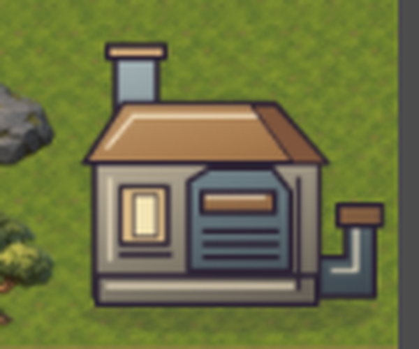
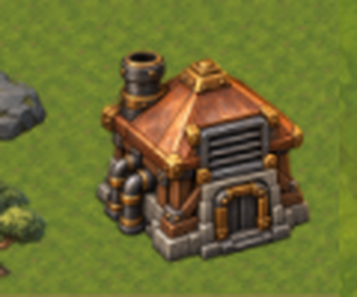
Mina habilitada
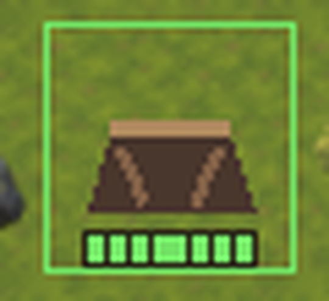
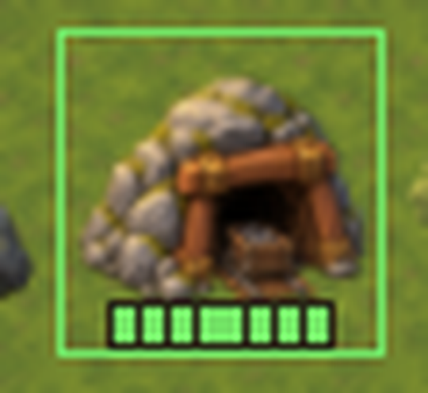
Mina agotada
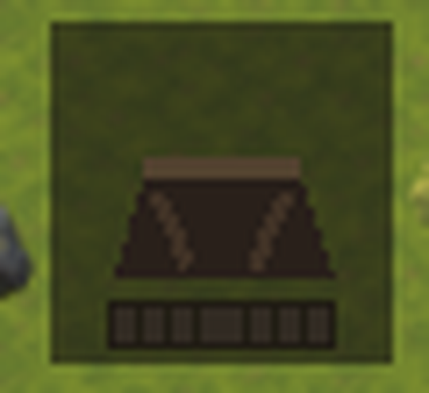
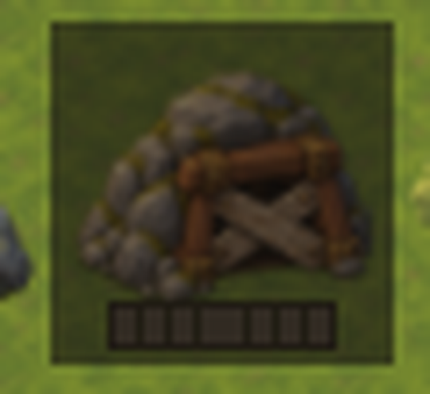
Bosque habilitado
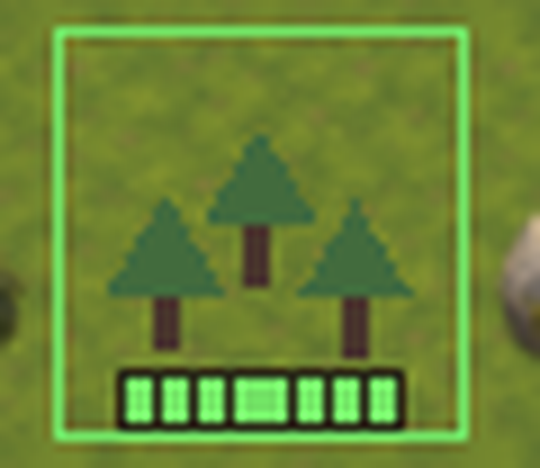
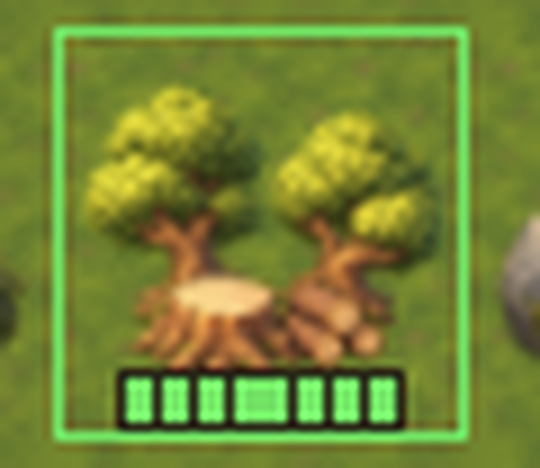
Marca «A» de la ruina
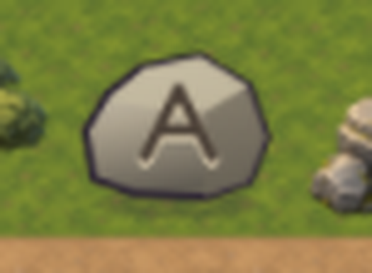
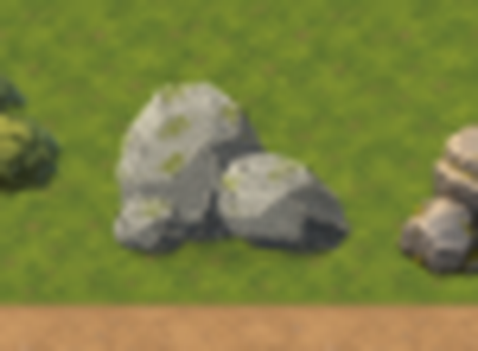
Campamento
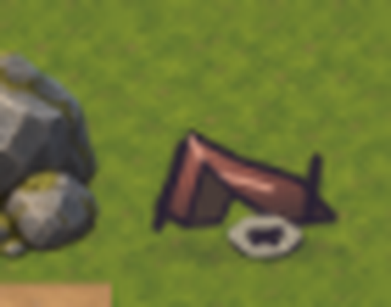
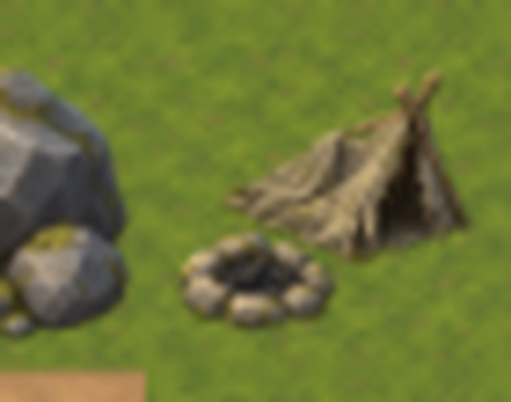
Sigue viejo: abastecimiento de T233 (idéntico antes y después)
Se muestra una sola imagen porque no cambió. Es lo que reemplazará T549.
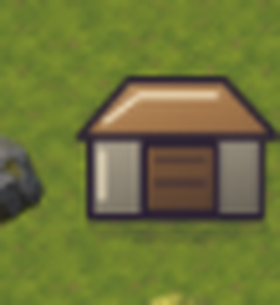
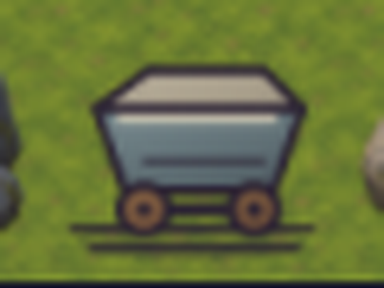
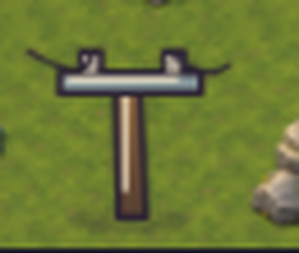
Qué no se pudo mostrar
- Capturas en un celular real, otros niveles intermedios y partidas completas.
- Animaciones (olas, polvo, torres disparando): son imágenes fijas.
- La imagen del epílogo y
hito.svg(no aparecen en el mapa). - Una captura intermedia solo con T277 (sin rocas, adornos ni flora posteriores): el «después» ya incluye todo lo integrado hasta hoy.
Las decisiones se guardan solo en este navegador; pasale el resultado al agente en el chat.